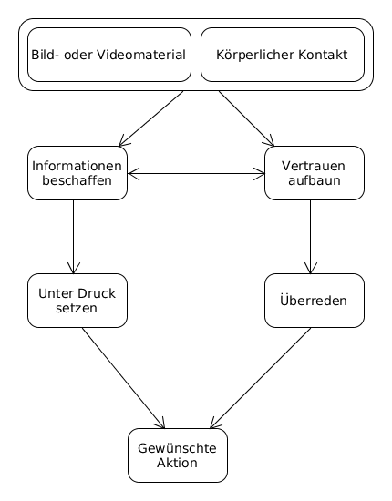

Neue Gefahren durch neue Apps und Foren wie YouNow und Snapchat
Inhalt
In den letzten 5 Jahren hat sich die Anzahl der Anwendungen in dem Bereich soziale
Netzwerke mehr als verdoppelt. Vor allem durch Mobile
Anwendungen hat sich die Benutzung dieser soziale Netzwerke dramatisch verändert.
Problematisch ist dabei, das Jugendliche sich der Konsequenz dieser Veränderung nicht
bewusst sind. Der folgender Artikel beschäftigt sich mit den Diensten YouNow und SnapChat
und stellt die Gefahren dieser Anwendungen anhand von realen Beispielen dar.

YouNow
YouNow ist eine kostenlose Live-Videostreaming-Plattform, die als App auf dem Smart-
phone oder als Desktop-Anwendung verfügbar ist. Nutzer können nach einer Anmeldung
mit der Kamera ihres Smartphones, Laptop oder Tablets Live-Streams von sich aufneh-
men und für andere Nutzer bereitstellen oder bei dessen Live-Streams zusehen. Neben
der Möglichkeit des Live-Streams bietet die Plattform einen Chat an, sodass in einem
Live-Stream alle Beteiligten miteinander kommunizieren können. Außerdem kann ein
weiterer Nutzer sich an einem Video beteiligen.

Snapchat
Snapchat ist eine kostenlose Smartphone Anwendung für Android und iOS, die es
seinen Nutzern ermöglicht Bild- sowie Videonachrichten zu versenden. Die App wurde
im September 2011 initial released und ist mittlerweile in 20 Sprachen übersetzt. Im
Gegensatz zu YouNow gibt es für Snapchat keine Desktopvariante.
Eine Besonderheit gegenüber anderen Anwendungen ist, dass die Medieninhalte nur für
begrenzte Zeit, d.h. mindestens eine und maximal 10 Sekunden für den/die Empfänger
sichtbar sind. Nach diesem Zeitraum löschen sich laut Anbieter die Dateien von selbst
beim Client. Mittlerweile ist es jedoch möglich die Inhalte mehrfach anzusehen. Zudem
kann ein Nutzer eine sogenannte „Snapchat-Geschichte” anlegen, welche 24 Stunden
sichtbar und mit bestimmten Freunden oder der gesamten Community teilbar ist.

Datenschutz und -nutzung
Auf der offiziellen Internetseite von Snapchat propagiert das Unternehmen den hohen
Stellenwert von Datenschutz. Jedoch werden bei der Nutzung von Snapchat und seinen
Services Daten von Nutzern gesammelt. Um eine hohe Transparenz zu gewährleisten,
beschreibt das Unternehmen, welche Daten zu welchen Zweck erhoben werden.
Vom Nutzer freiwillig gestellte Daten
Um Snapchat nutzen zu können braucht man
einen Nutzeraccount für dessen Erstellung man Informationen wie Name, Email-Adresse,
Passwort, Alter und ggf. Rufnummer angeben muss. Sein Profil kann man zudem noch
weiter bearbeiten, indem man ein Profilbild oder andere hilfreiche Informationen von
sich preisgibt. Diese Daten werden vom Unternehmen gespeichert. Kommerzielle Dienste
innerhalb der App benötigen ggf. Kreditkartennummern oder andere Zahlungsinformatio-
nen. Deine gesendeten Bilder und Videos können zum einen vom Empfänger gespeichert
werden (z.B. durch Screenshot) und werden ebenfalls auch von Snapchat gespeichert.
Daten, durch das Benutzen von Services
Die Anwendung sammelt eine Vielzahl von
Daten, die durch das Benutzen der Services anfallen. Das beinhaltet Nutzungsdaten wie
z.B. wie man mit anderen Personen kommuniziert oder wie der User bestimmte Services
nutzt. Außerdem werden die Inhalte jeder Kommunikation sowie gerätespezifische Daten
wie Telefonbuch, Kamera, Gallery und Standortdaten gespeichert.
Daten von Dritten
Snapchat kann Daten erfassen, die von anderen Nutzern über
einen bestimmten preisgegeben werden. Zum Beispiel, wenn ein bestimmter Nutzer A im
Telefonbuch eines Nutzers B aufgeführt wird, kann Snapchat diese Kontaktdaten mit
den Daten von Nutzer A zusammenführen.
Nutzung von Daten
Das Unternehmen verabeitet die Daten demhingegehend, dass
sie zum einen mit ihren Nutzern kommunizieren und die eigentliche Anwendung weiter-
entwickeln können. Zum anderen wird aus den Daten personalisierte Werbung verbessert,
angepasst und ausgeliefert.
Weitergabe von Daten
Die Daten von Nutzern kann von Snapchat auf folgende Weise
weitergegeben werden:
- An andere Snapchat-User: Daten zu einer Person wie Name und Alter als auch wei- tere Daten, die der Nutzer freiwillig abgibt, können an andere Nutzer weitergegeben werden, um bestimmte Personen schneller zu finden.
- An die Öffentlichkeit: Profilbilder, Snapcodes, und Medien, die ein Nutzer an öffentliche Channels sendet.
- An Dritte: Snapchat finanziert sich durch Werbung. Dementsprechend werden die personenbezogenen Daten an Drittanbieter aus der Werbebranche weitergegeben. Auch behält sich Snapchat das Recht, Daten aus rechtlichen Gründen bei Missbrauch oder anderen Verstößen offenzulegen.
- Aggregierte und anonymisierte Date: Diese Daten werden ebenfalls an Werbeunter- nehmen weitergegeben.
Community-Richtlinien
Snapchat besitzt Community-Richtlinien und Standards um einen sicheren Umgang
mit der Anwendung zu gewährleisten. Werden diese nicht eingehalten, kann es zu Sperrung
bzw. Löschung des Accounts führen. Die wichtigsten Ansätze der Richtlinien werden im
Folgenden kurz zusammengetragen.
Allgemeines
Es wird darauf hingewiesen, dass die Nutzer sich klar sein sollten, was sie
über Snapchat teilen. Insbesondere wird nochmals explizit darauf hingewiesen, dass der
Gegenüber die Möglichkeit besitzt, gesendete Daten abzufotographieren oder andersweitig
zu vervielfältigen. Zudem betont das Unternehmen, dass die Inhalte legal sein sollten.
Verbotene Inhalte
Snapchat weist explizit darauf hin, dass jede Art von Pornographie
in ihrem Netzwerk verboten ist. Das beinhaltet ein Verbot zur Verbreitung von pornogra-
phischen und nicht jugendfreien Inhalt, angedeutete sexuelle Handlung, sowie Nacktheit
in Verbindung mit sexuellen Handlungen.
Jugendliche sollen besonders geschützt werden. Deswegen untersagt Snapchat das
Versenden von Nacktdarstellungen oder sexuell aufreizende Inhalte von Minderjährigen.
Zudem weist das Unterehmen darauf hin, dass es verboten ist, Bilder oder Videos von
Dritten ohne deren Zustimmung zu versenden. Auch das Drohen bzw. Mobben anderer
Nutzer wird untersagt.
Gefahren in YouNow und Snapchat
Im nachfolgenden Abschnitt werden mögliche Wege zweier Angriffsziele aufgezeigt, die
Personen bei jugendliche Nutzer anwenden können. Zunächst wird ein Graph eingeführt,
der diese Angriffsszenarien verbildlicht. Danach wird die Umsetzung dieser Schritte mit
den jeweiligen Apps erklärt.

Als erstes Ziel wird die Beschaffung von Bild- oder
Videomaterial von der jugendliche Person definiert. Das zweite Ziel ist der körperliche
Kontakt, der eine Person zu der oder dem Jugendlichen erreichen möchte.
Informationen beschaffen um damit Druck auszuüben.
Die Idee bei diesem Weg ist, so viel Informationen zu beschaffen, mit dem der oder
die Jugendliche unter Druck gesetzt werden kann. Ein Druckmittel könnte ein Geheim-
nis von den Eltern oder unangenehme Informationen von den Jugendlichen sein. Mit
diesen Druckmittel kann dann das Opfer für Handlungen gezwungen werden. Diese
Praktiken nennt man Social Engineering. Dabei versucht man durch zwischenmenschliche
Bei YouNow kann jeder, auch ohne eine Anmeldung die Videos von Jugendlichen
ansehen, ohne dass die betreffende Person etwas davon mitbekommt. Hier wäre es
möglich über einen längeren Zeitraum belastende Informationen zu suchen. Denkbar wäre
auch gezielte Fragen zu stellen, mit denen man weitere Schritte unternehmen könnte.
Dazu müsste man sich allerdings anmelden.
Vertrauen aufbauen um die betreffende Person zu überreden.
Für diesen Schritt muss sich der Jugendliche über einen gewissen Zeitraum auf die
Person einlassen. Denkbar wäre im Vorfeld eine Informationsbeschaffung um gezielter zu
manipulieren oder das Vertrauen für die Beschaffung zu nutzen.
Bei YouNow, wie bei allen anderen Internetdiensten, ist es nicht möglich sicherzu-
stellen, dass sich hinter einer Person auch diese verbirgt. Man kann ohne weiteres sich
einen Account erstellen. Für die Kontaktaufnahme ist der Chat neben dem Stream
zur Verfügung. Außerdem gibt es noch die Möglichkeit dem Jugendlichen persönlich zu
schreiben.
Empfehlung für den Umgang mit YouNow
Um sicher YouNow zu nutzen, können einfache Regeln beachtet werden.
Wenig Profilinformationen
Da es nicht erforderlich ist, sein Profil mit allen Informa-
tionen zu befüllen, sollte nur das nötigste angegeben werden. Wohnort und Kontaktdaten
möglichst nicht ausfüllen. Außerdem sollte niemals der eigene Name als Nickname ver-
wendet werden.
Informationen ausblenden
Unter den Profileinstellungen kann man die Option hide
my city anklicken. Dadurch wird der Wohnort verborgen.
Nutzer melden/blockieren
Sind Personen aufdringlich oder beleidigend, kann man
diese blockieren, sodass sie dann keine Möglichkeit mehr haben, Kontakt aufzunehmen.
Allerdings gilt das nur für angemeldete Nutzer. Der Live-Stream ist weiterhin für jeder-
mann zugänglich. Möchte man einen anderen Nutzer melden, weil er gegen eines der
YouNow Regeln verstoßen hat, kann man dies über die Melde-Funktion machen. Eine
weitere Option besteht darin, direkt Kontakt mit einem Moderator aufzunehmen. Hierbei
gibt es ein Kontaktformular. Hier müssen Angaben wie der Grund, eine Beschreibung
und ggf. ein Screenshots angeben.
Antworten vorbereiten
Während eines Live-Streams werden die Streamenden oft nach
dem Alter, Wohnort bzw. Adresse oder anderen persönlichen Fragen gefragt. Hier emp-
fiehlt es sich, vorab darüber nachzudenken, wie man darauf antworten könnte. So kann bei
der Frage nach dem Wohnort bzw. Adresse eine sehr ungenaue Antwort wie: „Ich komme
aus Bayern“geantwortet werden. Und bei weiteren Nachfragen könnte man bestimmt
antworten: „Genauer möchte ich nicht darauf eingehen“. Weiter kann man sich die eigene
häusliche Umgebung für den Live-Stream gut ansehen und persönliche Dinge in dem
Zimmer entfernen bevor man den Stream startet.
Medien
Nachfolgend werden einzelne Beiträge aus Pressemitteilungen aufgelistet die einen Einblick
auf die Schattenseiten des YouNow-Protals zeigen sollen. Das dies durchaus ein Problem
für den Betreiber YouNow darstellt, zeigt der Artikel von YouNow, in dem dieser verstärkt
Moderatoren für die Einhaltung der Regeln einstellen wolle und er sich verstärkt um
Minderjährige Nutzer kümmern möchte.
Weiblicher Fan wird vor der Kamera zum Ausziehen überredet
Ein sehr harter
Vorfall zeigt, wie ein Nutzer einen anderen weiblichen Fan befragt, ob sie mit ihm
Geschlechtsverkehr haben möchte. Als sie dieses bejaht, geht er einen Schritt weiter und
fragt diese, ob sie auch Oralverkehr mache. Nach einer weiteren Bejahung fordert er sie
dazu auf sich vor der Kamera auszuziehen. Dabei gibt er vor, alle anderen aus dem Chat
geblockt zu haben, damit keiner etwas sieht. Nachdem der weibliche Fan auch noch den
BH auszieht, gibt er zu, das jeder in seinem Live-Stream zugesehen habe.
Stern-Online warnt vor YouNow
In einem Artikel im Stern wird an die
Eltern appelliert mehr in Erfahrung zu bringen, welche Medien ihre Kinder nutzen. Diese
sollten das Gespräch suchen und vor den Gefahren aufklären. Zu sehen ist in dem Artikel ein weiblicher Nutzer mit einem Zettel auf dem steht: „Bei 200 Likes könnt ihr mich im
BH sehen“.
Rechtsanwälte klären auf
Die Rechtsanwaltskanzlei WILDE BEUGER SOMECKE
warnt vor den Rechtlichen Fallstricken des YouNow-Portals. Hier wird darauf
aufmerksam gemacht, dass das Filmen von Unterricht nicht legal sei. Außerdem entstehen
Urheberrechtsverletzungen, weil Nutzer im Hintergrund Musik laufen ließen. Ein Studie
zeigte auf, das 37 % aller Broadcasts aus Deutschland gegen das Urheberrecht. Weitere
12 % gegen Persönlichkeitsrecht, 8 % enthalten Beleidigungen oder zeigen Drogenkonsum
von Minderjährigen.
Quellen
- http://blog.younow.com/post/109615590444/eine-nachricht-an-alle-deutschen-nutzer-von-younow
- http://www.maedchen.de/artikel/younow-skandal-minderjaehrige-zieht-sich-aus-2900751.html
- http://www.klicksafe.de/themen/kommunizieren/apps/younow/sicher-auf-younow-unterwegs
- http://www.klicksafe.de/themen/kommunizieren/smartphones/snapchat/risiken-bei-snapchat
- http://www.klicksafe.de/themen/kommunizieren/smartphones/snapchat/risiken-bei-snapchat
- http://www.klicksafe.de/themen/kommunizieren/smartphones/snapchat/risiken-bei-snapchat
- http://www.stern.de/digital/online/younow--paedophile-lieben-diese-app-3965596.html
- https://www.wbs-law.de/it-recht/younow-gesteht-fehler-ein-60208
- https://de.statista.com/statistik/daten/studie/298176/umfrage/umfrage-zur-nutzung-sozialer-netzwerke-durch-kinder-und-jugendliche
- https://de.statista.com/statistik/studie/id/11852/dokument/soziale-netzwerke-statista-dossier/
- http://www.zeit.de/digital/internet/2015-02/younow-streaming-jugendschutz-stalker